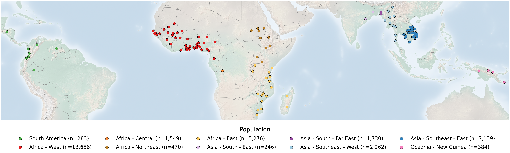

Create map of sample collection locations#
Introduction#
The publicly available Pf8 dataset for Plasmodium falciparum comprises 33,325 samples, collected by 99 partner studies from 34 countries in Africa, Asia, South America and Oceania between 1966 and 2022. In this notebook, we will generate a figure which shows where the samples of the Pf8 dataset were collected on a global map, highlighting the 122 first-level administrative divisions from which samples were taken within countries. On this figure, points represent sampling locations, coloured according to the major sub-population to which the location is assigned. This notebook will demonstrate the code required to generate this figure panel.
This notebook should take around 2 minutes to run.
Setup#
Install the MalariaGEN, basemap, and cartopy packages:
!pip install malariagen_data -q --no-warn-conflicts
!pip install -q --no-warn-conflicts basemap
!pip install -q --no-warn-conflicts cartopy
Installing build dependencies ... ?25l?25hdone
Getting requirements to build wheel ... ?25l?25hdone
Preparing metadata (pyproject.toml) ... ?25l?25hdone
━━━━━━━━━━━━━━━━━━━━━━━━━━━━━━━━━━━━━━━━ 4.0/4.0 MB 66.2 MB/s eta 0:00:00
?25h Preparing metadata (setup.py) ... ?25l?25hdone
Preparing metadata (setup.py) ... ?25l?25hdone
━━━━━━━━━━━━━━━━━━━━━━━━━━━━━━━━━━━━━━━━ 71.7/71.7 kB 2.8 MB/s eta 0:00:00
━━━━━━━━━━━━━━━━━━━━━━━━━━━━━━━━━━━━━━━━ 775.9/775.9 kB 44.0 MB/s eta 0:00:00
━━━━━━━━━━━━━━━━━━━━━━━━━━━━━━━━━━━━━━━━ 25.9/25.9 MB 46.9 MB/s eta 0:00:00
━━━━━━━━━━━━━━━━━━━━━━━━━━━━━━━━━━━━━━━━ 8.7/8.7 MB 69.2 MB/s eta 0:00:00
━━━━━━━━━━━━━━━━━━━━━━━━━━━━━━━━━━━━━━━━ 210.6/210.6 kB 16.2 MB/s eta 0:00:00
━━━━━━━━━━━━━━━━━━━━━━━━━━━━━━━━━━━━━━━━ 6.3/6.3 MB 94.1 MB/s eta 0:00:00
━━━━━━━━━━━━━━━━━━━━━━━━━━━━━━━━━━━━━━━━ 3.3/3.3 MB 89.1 MB/s eta 0:00:00
━━━━━━━━━━━━━━━━━━━━━━━━━━━━━━━━━━━━━━━━ 7.8/7.8 MB 98.4 MB/s eta 0:00:00
━━━━━━━━━━━━━━━━━━━━━━━━━━━━━━━━━━━━━━━━ 78.1/78.1 kB 6.0 MB/s eta 0:00:00
━━━━━━━━━━━━━━━━━━━━━━━━━━━━━━━━━━━━━━━━ 101.7/101.7 kB 8.1 MB/s eta 0:00:00
━━━━━━━━━━━━━━━━━━━━━━━━━━━━━━━━━━━━━━━━ 8.9/8.9 MB 98.3 MB/s eta 0:00:00
━━━━━━━━━━━━━━━━━━━━━━━━━━━━━━━━━━━━━━━━ 228.0/228.0 kB 18.3 MB/s eta 0:00:00
━━━━━━━━━━━━━━━━━━━━━━━━━━━━━━━━━━━━━━━━ 13.4/13.4 MB 28.5 MB/s eta 0:00:00
━━━━━━━━━━━━━━━━━━━━━━━━━━━━━━━━━━━━━━━━ 1.6/1.6 MB 65.8 MB/s eta 0:00:00
?25h Building wheel for malariagen_data (pyproject.toml) ... ?25l?25hdone
Building wheel for dash-cytoscape (setup.py) ... ?25l?25hdone
Building wheel for asciitree (setup.py) ... ?25l?25hdone
━━━━━━━━━━━━━━━━━━━━━━━━━━━━━━━━━━━━━━━━ 942.4/942.4 kB 42.9 MB/s eta 0:00:00
━━━━━━━━━━━━━━━━━━━━━━━━━━━━━━━━━━━━━━━━ 30.5/30.5 MB 58.7 MB/s eta 0:00:00
━━━━━━━━━━━━━━━━━━━━━━━━━━━━━━━━━━━━━━━━ 11.6/11.6 MB 100.1 MB/s eta 0:00:00
━━━━━━━━━━━━━━━━━━━━━━━━━━━━━━━━━━━━━━━━ 53.0/53.0 kB 4.0 MB/s eta 0:00:00
━━━━━━━━━━━━━━━━━━━━━━━━━━━━━━━━━━━━━━━━ 8.6/8.6 MB 103.7 MB/s eta 0:00:00
━━━━━━━━━━━━━━━━━━━━━━━━━━━━━━━━━━━━━━━━ 11.7/11.7 MB 100.0 MB/s eta 0:00:00
?25h
Load the required Python libraries:
import malariagen_data
import pandas as pd
import numpy as np
import collections
import matplotlib.pyplot as plt
from matplotlib.image import imread
import cartopy.crs as ccrs
import cartopy.feature as cfeature
import warnings
from cartopy.io import DownloadWarning
from google.colab import drive
Data Access#
Firstly, load the Pf8 metadata. We then check the ‘shape’ of the data to make sure it is what we were expecting. This is the full metadata for the Pf8 dataset, which includes 33,325 samples, with 17 variables of associated metadata.
# Load Pf8 data
release_data = malariagen_data.Pf8()
sample_metadata = release_data.sample_metadata()
# View the 'shape' of the data - i.e. how many rows and columns does it have?
print(sample_metadata.shape)
(33325, 17)
Often when working with dataframes such as these, it is useful to check the first few rows of the dataset to make sure it is the correct data and in the format we are expecting. You can see each sample has an ID, information on when and where it was collected, and details on their related genetic data.
# View the top few rows of the metadata
sample_metadata.head()
| Sample | Study | Country | Admin level 1 | Country latitude | Country longitude | Admin level 1 latitude | Admin level 1 longitude | Year | ENA | All samples same case | Population | % callable | QC pass | Exclusion reason | Sample type | Sample was in Pf7 | |
|---|---|---|---|---|---|---|---|---|---|---|---|---|---|---|---|---|---|
| 0 | FP0008-C | 1147-PF-MR-CONWAY | Mauritania | Hodh el Gharbi | 20.265149 | -10.337093 | 16.565426 | -9.832345 | 2014.0 | ERR1081237 | FP0008-C | AF-W | 82.48 | True | Analysis_set | gDNA | True |
| 1 | FP0009-C | 1147-PF-MR-CONWAY | Mauritania | Hodh el Gharbi | 20.265149 | -10.337093 | 16.565426 | -9.832345 | 2014.0 | ERR1081238 | FP0009-C | AF-W | 88.95 | True | Analysis_set | gDNA | True |
| 2 | FP0010-CW | 1147-PF-MR-CONWAY | Mauritania | Hodh el Gharbi | 20.265149 | -10.337093 | 16.565426 | -9.832345 | 2014.0 | ERR2889621 | FP0010-CW | AF-W | 87.01 | True | Analysis_set | sWGA | True |
| 3 | FP0011-CW | 1147-PF-MR-CONWAY | Mauritania | Hodh el Gharbi | 20.265149 | -10.337093 | 16.565426 | -9.832345 | 2014.0 | ERR2889624 | FP0011-CW | AF-W | 86.95 | True | Analysis_set | sWGA | True |
| 4 | FP0012-CW | 1147-PF-MR-CONWAY | Mauritania | Hodh el Gharbi | 20.265149 | -10.337093 | 16.565426 | -9.832345 | 2014.0 | ERR2889627 | FP0012-CW | AF-W | 89.86 | True | Analysis_set | sWGA | True |
Preparing the data for the figure#
In the figure we would like to do three things:
Show a world map
Highlight the locations from which samples were taken. In our case, this will be as circular points.
Colour each point by the sub-population to which the samples were assigned.
To do this, we will start by generating a dictionary object which we can use as a legend for the plot, with the full title for each population:
#You might have noticed the 'Population' variable in the above meta-data does not contain the full name of each population, only an abbreviation.
#Here, we generate a dictionary which contains the full name of each population. This will be useful later in creating a legend for the plot.
Population_legend = collections.OrderedDict()
Population_legend['SA'] = "South America"
Population_legend['AF-W'] = "Africa - West"
Population_legend['AF-C'] = "Africa - Central"
Population_legend['AF-NE'] = "Africa - Northeast"
Population_legend['AF-E'] = "Africa - East"
Population_legend['AS-S-E'] = "Asia - South - East"
Population_legend['AS-S-FE'] = "Asia - South - Far East"
Population_legend['AS-SE-W'] = "Asia - Southeast - West"
Population_legend['AS-SE-E'] = "Asia - Southeast - East"
Population_legend['OC-NG'] = "Oceania - New Guinea"
We would then like to assign each population a colour:
# We create a second dictionary object, where each population is given a hexadecimal colour e.g. #4daf4a
Population_colours = collections.OrderedDict()
Population_colours['SA'] = "#4daf4a"
Population_colours['AF-W'] = "#e31a1c"
Population_colours['AF-C'] = "#fd8d3c"
Population_colours['AF-NE'] = "#bb8129"
Population_colours['AF-E'] = "#fecc5c"
Population_colours['AS-S-E'] = "#dfc0eb"
Population_colours['AS-S-FE'] = "#984ea3"
Population_colours['AS-SE-W'] = "#9ecae1"
Population_colours['AS-SE-E'] = "#3182bd"
Population_colours['OC-NG'] = "#f781bf"
# Then we generate a new variable - 'population colour' onto the metadata, and impute the assigned colours using the dictionary
sample_metadata['Population_colour'] = sample_metadata['Population'].map(Population_colours)
# Note we now have an extra colomn
print(sample_metadata.shape)
# Lets check the above has worked by outputting the first few rows of the data, now with the new Population_colour variable
# you will see each population has now been assigned their corresponding colour
sample_metadata.head()
(33325, 18)
| Sample | Study | Country | Admin level 1 | Country latitude | Country longitude | Admin level 1 latitude | Admin level 1 longitude | Year | ENA | All samples same case | Population | % callable | QC pass | Exclusion reason | Sample type | Sample was in Pf7 | Population_colour | |
|---|---|---|---|---|---|---|---|---|---|---|---|---|---|---|---|---|---|---|
| 0 | FP0008-C | 1147-PF-MR-CONWAY | Mauritania | Hodh el Gharbi | 20.265149 | -10.337093 | 16.565426 | -9.832345 | 2014.0 | ERR1081237 | FP0008-C | AF-W | 82.48 | True | Analysis_set | gDNA | True | #e31a1c |
| 1 | FP0009-C | 1147-PF-MR-CONWAY | Mauritania | Hodh el Gharbi | 20.265149 | -10.337093 | 16.565426 | -9.832345 | 2014.0 | ERR1081238 | FP0009-C | AF-W | 88.95 | True | Analysis_set | gDNA | True | #e31a1c |
| 2 | FP0010-CW | 1147-PF-MR-CONWAY | Mauritania | Hodh el Gharbi | 20.265149 | -10.337093 | 16.565426 | -9.832345 | 2014.0 | ERR2889621 | FP0010-CW | AF-W | 87.01 | True | Analysis_set | sWGA | True | #e31a1c |
| 3 | FP0011-CW | 1147-PF-MR-CONWAY | Mauritania | Hodh el Gharbi | 20.265149 | -10.337093 | 16.565426 | -9.832345 | 2014.0 | ERR2889624 | FP0011-CW | AF-W | 86.95 | True | Analysis_set | sWGA | True | #e31a1c |
| 4 | FP0012-CW | 1147-PF-MR-CONWAY | Mauritania | Hodh el Gharbi | 20.265149 | -10.337093 | 16.565426 | -9.832345 | 2014.0 | ERR2889627 | FP0012-CW | AF-W | 89.86 | True | Analysis_set | sWGA | True | #e31a1c |
Next, we would like to count the number of samples from each location. Note that we have three levels of information for each location, making it a little tricky. To get counts for each location, we would like each of three category levels to be included:
The population the sample came from (e.g. East Africa)
The country the sample came from (e.g. Kenya)
The administrative level within each country (e.g. Kilifi)
We therefore need to count the number of samples within each sub-category (e.g. East Africa - Kenya - Kilifi). To do this we can create a new dataframe, where we count the number of samples in each sub-category:
# Here, we create the new dataframe 'sample_metadata_admin1'.
sample_metadata_admin1 = (
pd.DataFrame(
sample_metadata # we first take the previous dataframe from above
.groupby(['Population', # then group the data by several variables (Population, Country & Admin level 1)
'Country',
'Admin level 1',
'Population_colour', # we also want to include some of the other variables from the previous dataframe (population colour and latitude/longitude)
'Admin level 1 latitude',
'Admin level 1 longitude'])
.size()
.reset_index(name='Number of samples') # Then count samples within each subgroup (Population > Country > Admin level 1)
)
.set_index(['Country', 'Admin level 1']) # we then set Country and Admin level 1 as the new index
)
# Lets check the above has worked correctly by outputting the new dataframe
pd.options.display.max_rows = 100 # display a maximum of 100 rows
sample_metadata_admin1
| Population | Population_colour | Admin level 1 latitude | Admin level 1 longitude | Number of samples | ||
|---|---|---|---|---|---|---|
| Country | Admin level 1 | |||||
| Democratic Republic of the Congo | Kinshasa | AF-C | #fd8d3c | -4.436710 | 15.904241 | 1549 |
| Kenya | Kilifi | AF-E | #fecc5c | -3.174404 | 39.686888 | 2078 |
| Madagascar | Fianarantsoa | AF-E | #fecc5c | -21.856236 | 46.862308 | 1 |
| Mahajanga | AF-E | #fecc5c | -16.536991 | 46.684670 | 24 | |
| Malawi | Chikwawa | AF-E | #fecc5c | -16.164374 | 34.708946 | 629 |
| ... | ... | ... | ... | ... | ... | ... |
| Colombia | Norte de Santander | SA | #4daf4a | 8.077473 | -72.889328 | 8 |
| Valle del Cauca | SA | #4daf4a | 3.868855 | -76.531745 | 3 | |
| Honduras | Francisco Morazan | SA | #4daf4a | 14.283520 | -87.188126 | 8 |
| Peru | Loreto | SA | #4daf4a | -4.123815 | -74.424073 | 106 |
| Venezuela | Bolivar | SA | #4daf4a | 6.213313 | -63.486330 | 2 |
123 rows × 5 columns
Plotting Global Map of Pf8 Samples#
We can start plotting. Firstly, we set the basic plotting parameters for the plot, such as the font sizes. We then set the range of latitude and longitude we would like to include in the plot, as well as the total size of the image.
# Set basic plotting parameters
rcParams = plt.rcParams
base_font_size = 12
rcParams['font.size'] = base_font_size
rcParams['axes.labelsize'] = base_font_size
rcParams['xtick.labelsize'] = base_font_size
rcParams['ytick.labelsize'] = base_font_size
rcParams['legend.fontsize'] = base_font_size
rcParams['axes.linewidth'] = 1
rcParams['lines.linewidth'] = 1
rcParams['patch.linewidth'] = 1
rcParams['ytick.direction'] = 'out'
rcParams['xtick.direction'] = 'out'
rcParams['lines.markeredgewidth'] = 3
rcParams['figure.max_open_warning'] = 5000
# Define the maximum and minimum latitude and longitude for the map
min_lat = int(sample_metadata_admin1['Admin level 1 latitude'].min()) - 3
max_lat = int(sample_metadata_admin1['Admin level 1 latitude'].max()) + 3
min_long = int(sample_metadata_admin1['Admin level 1 longitude'].min()) - 3
max_long = int(sample_metadata_admin1['Admin level 1 longitude'].max()) + 3
# Then define the total size of the image
map_size = ((int(sample_metadata_admin1['Admin level 1 longitude'].max()) + 3 - int(sample_metadata_admin1['Admin level 1 longitude'].min()) - 3) / 4 ,
(int(sample_metadata_admin1['Admin level 1 latitude'].max()) + 3 - int(sample_metadata_admin1['Admin level 1 latitude'].min()) - 3 ) / 4 )
Before plotting the sampling locations, we first need to download the map image we will use. This first code chunk downloads an image to use from the Natural Earth Data website, this will be used to generate the plot.
# First we need to download the map image file via a web link:
!wget https://naturalearth.s3.amazonaws.com/4.1.1/50m_raster/HYP_50M_SR_W.zip
# Unzip if you haven't yet
!unzip './HYP_50M_SR_W.zip'
# the file and define the path to the image file:
image = './HYP_50M_SR_W.tif'
--2025-02-28 11:09:53-- https://naturalearth.s3.amazonaws.com/4.1.1/50m_raster/HYP_50M_SR_W.zip
Resolving naturalearth.s3.amazonaws.com (naturalearth.s3.amazonaws.com)... 52.218.252.27, 52.218.182.187, 52.92.229.129, ...
Connecting to naturalearth.s3.amazonaws.com (naturalearth.s3.amazonaws.com)|52.218.252.27|:443... connected.
HTTP request sent, awaiting response... 200 OK
Length: 102197904 (97M) [application/zip]
Saving to: ‘HYP_50M_SR_W.zip’
HYP_50M_SR_W.zip 100%[===================>] 97.46M 37.2MB/s in 2.6s
2025-02-28 11:09:57 (37.2 MB/s) - ‘HYP_50M_SR_W.zip’ saved [102197904/102197904]
Archive: ./HYP_50M_SR_W.zip
inflating: HYP_50M_SR_W.README.html
extracting: HYP_50M_SR_W.VERSION.txt
inflating: HYP_50M_SR_W.prj
inflating: HYP_50M_SR_W.tfw
inflating: HYP_50M_SR_W.tif
Finally, on the background of this world map, we will place scatters on each Admin Level 1 location where there is a sample.
A download of an additional map may be required the first time this cell is run and we can ignore the warning.
# 1. Define the figure and axes
fig = plt.figure(figsize=map_size)
alpha = 1.0
# 2. Draw the map background with identical parameters
ax = plt.axes(projection=ccrs.PlateCarree())
ax.set_extent([min_long, max_long,min_lat, max_lat], crs=ccrs.PlateCarree())
ax.imshow(imread(image), origin='upper', alpha = 0.4, transform= ccrs.PlateCarree(),
extent=[-180, 180, -90, 90])
# Next line after this will download an additional map for drawing borders
with warnings.catch_warnings():
warnings.filterwarnings("ignore", category=DownloadWarning)
ax.add_feature(cfeature.BORDERS, linestyle='-', linewidth=0.6, edgecolor='grey')
# 3. Show admin 1 levels, with color reflecting population
ax.scatter(
sample_metadata_admin1['Admin level 1 longitude'],
sample_metadata_admin1['Admin level 1 latitude'],
c=sample_metadata_admin1['Population_colour'],
edgecolors='black',
s=220,
alpha=alpha,
transform=ccrs.PlateCarree()
)
# 4. Make legend with dummy points
for population in Population_colours:
n = np.count_nonzero(sample_metadata['Population'] == population)
plt.scatter(
[],
[],
c=Population_colours[population],
edgecolors='black',
alpha=alpha,
s=150,
label=f"{Population_legend[population]} (n={n:,})"
)
plt.legend(
scatterpoints=1,
frameon=False,
labelspacing=0.7,
loc='upper center',
bbox_to_anchor=(0.5, -0.02),
ncol = 5,
fontsize=30,
markerscale=1.5,
title = 'Population',
title_fontsize=35
)
# 5. Add title (optional)
#plt.title("Figure 1A: Sampling locations")
plt.show()
/usr/local/lib/python3.11/dist-packages/cartopy/io/__init__.py:241: DownloadWarning: Downloading: https://naturalearth.s3.amazonaws.com/110m_cultural/ne_110m_admin_0_boundary_lines_land.zip
warnings.warn(f'Downloading: {url}', DownloadWarning)

Save the figure:#
# Mount Google Drive
drive.mount('/content/drive')
# Save sampling locations plot
# This will send the file to your Google Drive, where you can download it from if needed
# Note, this code will only save the updated 'cartopy' version of the plot. If you would like to save the original version instead, you will have to comment out the code chunk which generates the map using cartopy (the chunk directly above this one).
# Change the file path if you wish to send the file to a specific location
# Change the file name if you wish to call it something else
file_path = '/content/drive/My Drive/'
file_name = 'Pf8_sample_collections_map'
# We save as both .png and .PDF files
fig.savefig(f'{file_path}{file_name}.png', dpi=350, bbox_inches = 'tight')
fig.savefig(f'{file_path}{file_name}.pdf', dpi=350, bbox_inches = 'tight')
Mounted at /content/drive
Conclusion#
In summary, in this notebook, we accessed the MalariaGEN data available on the cloud for the latest Plasmodium falciparum data release (Pf8). We then created the plot showing the global map of the samples and output this as both a .png and .pdf file.